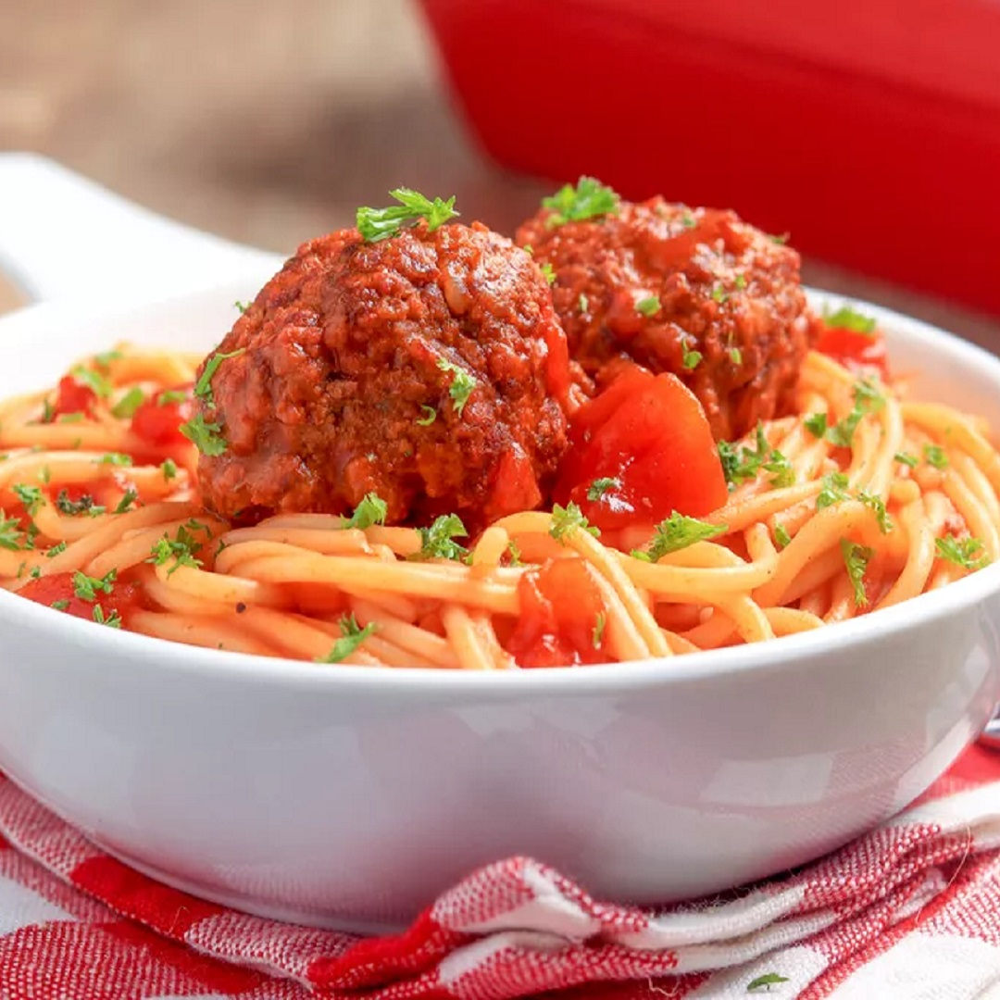

Need a new go-to dinner? This quick chicken dinner recipe is perfect for a stress-free weeknight meal, and make enough so that you can have leftovers for lunch. With pastas, salads, bakes, and more...
Toasted Cheese Omelette
Master the omelette with our simple recipe then add the filling of your choice! This toasted cheese omelette on toast is easy to make, it’s nutritious, rich in protein and it’s quick to cook. It keeps you full for the whole morning.
Wings Inspirations
Fried chicken wings are so easy to make and always turn out great. Be sure to let them refrigerate for at least an hour. It well help the flavor and ensure they are extra crispy. Be sure dip them (or drown).

Spaghetti Time
This fabulous recipe for slow-cooker spaghetti and meatballs tastes like something from a restaurant. It's perfect to serve to your family and comforting and delicious enough to serve to guests.
Fried Chicken Breasts
Ingredients: 6 split bone-in chicken breasts or boneless chicken breasts
1/2 teaspoon salt, plus more to taste
1/2 teaspoon freshly ground black pepper, plus more to taste
2 c. all-purpose flour
1 tsp. garlic powder
1 teaspoon baking powder
1/4 tsp. cayenne pepper
Vegetable oil, for frying
Instructions: Step 1 Gather the ingredients. If you will be cooking in batches, line a large baking sheet with foil and top with a wire rack (such as a cooling rack).
Step 2 Sprinkle the chicken breasts with salt and freshly ground black pepper. In a food storage bag or wide, shallow bowl, combine the flour, 1/2 teaspoon each salt and pepper, and the baking powder and shake or stir to blend. Put the chicken pieces in the flour mixture and shake or mix gently until well coated.
Step 3 Place the chicken on a rimmed baking dish or large platter. Cover and refrigerate for 2 to 4 hours.
Step 4 Pour about 1 1/2 inches of vegetable oil in a deep skillet or Dutch oven and place it over medium heat. Heat the oil to 350 F.
Step 5 Add the chicken pieces to the hot oil. When the chicken is hot and browning well, reduce the heat to medium-low. Continue cooking for 8 to 12 minutes on each side, or until well browned and juices run clear when pierced with a fork. (Boneless chicken breasts will take about half the time.)
Step 6 If cooking in batches, remove the chicken pieces to the rack on the prepared pan and tent loosely with foil; fry the remaining chicken.
Step 7 Pair with your favorite sides and enjoy.
Toasted Cheese Omelette
Ingredients: 1 medium tomato, red
1/2 medium bell pepper, green
4 stalk green onion
8 large egg
1/8 teaspoon salt
1/8 teaspoon black pepper, ground
1/4 cup milk
1 1/3 tablespoon butter, salted
Serve With
8 slice bread, whole wheat
4 medium orange
Instructions: Step 1 First, prepare the filling. A basic rule of thumb is that you need 1/4-1/3 cup of filling for every two eggs. Dice any vegetables you are using. If you are using a filling that needs to be cooked — such as apples, mushrooms, onions, peppers, leeks — quickly sauté in a small frying pan with 1 teaspoon of the butter. You can also just leave them raw. If you are making a cheese omelette, either slice the cheese thinly or grate it finely and put aside.
Crack the eggs into a small mixing bowl. Stir gently with a fork until well-beaten.
Step 2 Add 1 tablespoon milk (or water), salt and pepper, and any herbs, and set aside.
Heat a 6- to 8-inch omelette pan over high heat until very hot (approximately 30 seconds). Add 1 teaspoon butter, making sure it coats the bottom of the pan. As soon as the butter stops bubbling and sizzling (and before it starts to brown), slowly pour in the egg mixture.
Tilt the pan to spread the egg mixture evenly. Let eggs firm up a little, and after about ten seconds shake the pan a bit and use a spatula to gently direct the mixture away from the sides and into the middle. Allow the remaining liquid to then flow into the space left at the sides of the pan.
Continue to cook for another minute or so until the egg mixture holds together. While the middle is still a little runny, add the filling.
Step 3 Put in sautéed vegetables or fruit first, near the center, then sprinkle any cheese on top.
Tilt the pan to one side and use the spatula to fold approximately one third of the omelette over the middle. Shake the pan gently to slide the omelette to the edge of the pan.
Holding the pan above the serving plate, tip it so the omelette rolls off, folding itself onto the plate. The two edges will be tucked underneath.
Step 4 Serve with toast and orange wedges.
Wings Inspirations
Ingredients: 2 lb. chicken wings
4 grams salt
Freshly ground black pepper
2 c. all-purpose flour
1 tsp. garlic powder
1/2 tsp. mustard powder
1/4 tsp. cayenne pepper
Vegetable oil, for frying
Instructions: Step 1 Rinse wings under cold water then pat dry with paper towels. Place wings on a baking sheet lined with a cooling rack then season wings on both sides with salt and pepper. Refrigerate for 1 hour.
Step 2 In a shallow bowl, stir together flour and spices then season with salt and pepper. Working one at a time, coat chicken in flour mixture.
Step 3 In a large pot over medium heat, heat 2” oil until shimmering (about 350°) Working in batches, fry chicken until deeply golden and cooked through, 8 minutes.
Step 4 Drain on a paper towel lined plate. Serve warm.
Spaghetti Time
Ingredients: 1 medium onion (chopped)
16-ounce package frozen fully cooked meatballs
15-ounce can diced tomatoes (undrained)
26-ounce jar spaghetti sauce
1/3 cups water
About 8 ounces handfuls spaghetti pasta
Grated Parmesan cheese to taste
Red pepper flakes to taste
Instructions: Step 1 In a 4- to 5-quart slow cooker, place the onions (and any other vegetables you'd like to add, if you are using others) in the bottom of the cooker. Top the vegetables with the meatballs and diced undrained tomatoes.
Step 2 Add the spaghetti sauce to the mixture in the crock pot and stir gently. Rinse out the spaghetti sauce jar with the water, add it to the crock pot, and stir again.
Step 3 Cover the slow cooker and cook on low for 6 to 7 hours, or on high for 3 1/2 hours, until the onions are tender and the meatballs are hot.
Step 4 Stir the spaghetti sauce mixture well, then add the broken spaghetti. Stir and make sure that all of the spaghetti is separated and is completely covered by the sauce.
Step 4 Cover the slow cooker and cook on high for 15 to 25 minutes, or until the spaghetti is al dente (tender to the bite, but with a slight firmness in the center). You have to taste the pasta to make sure it is properly cooked.
Step 4 Stir and serve immediately, garnished with Parmesan cheese and red pepper flakes if desired.